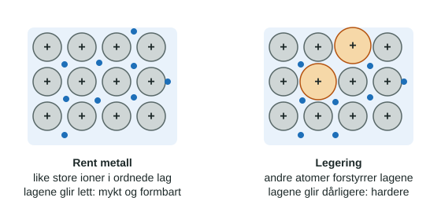
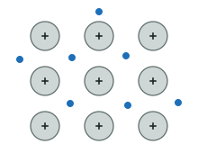

Metallbinding og legeringer
Rør, tanker, pumper og ventiler i et prosessanlegg er laget av metall, og nesten alltid av legeringer som stål. Hvilket metall som velges, avhenger av egenskapene. Egenskapene kommer av hvordan metallatomene er bundet sammen.
Metallbindingen
Metallatomer har få ytterelektroner, og de holder dårlig på dem. I et metall gir atomene fra seg ytterelektronene til et felles «hav» av elektroner som kan bevege seg fritt mellom atomene. Dette kalles en elektronsjø.
Når atomene gir fra seg elektroner, blir de positive ioner. Metallet består altså av positive metallioner som ligger i ordnede lag, omgitt av frie elektroner. Tiltrekningen mellom de positive ionene og de negative elektronene er metallbindingen.

Egenskapene til metaller
Elektronsjøen forklarer de typiske egenskapene til metaller:
| Egenskap | Forklaring |
|---|---|
| leder strøm | De frie elektronene kan bevege seg gjennom metallet. |
| leder varme | De frie elektronene frakter varmen raskt videre. |
| glans | Elektronene i overflaten reflekterer lyset. |
| kan formes (bøyes, valses, trekkes) | Lagene av ioner kan gli over hverandre uten at bindingen brytes, fordi elektronsjøen følger med. |
| som regel høyt smeltepunkt | Metallbindingen er sterk. Jern smelter ved ca. 1540 °C. |
Sammenlign med et salt. Hvis du slår på en saltkrystall, forskyves lagene slik at like ladninger havner ved siden av hverandre. Da frastøter de hverandre, og krystallen sprekker. Et metall bøyer seg i stedet.
Ikke alle metaller har høyt smeltepunkt. Kvikksølv er flytende ved romtemperatur, og natrium smelter ved under 100 °C.
Legeringer
En legering er en blanding av et metall og ett eller flere andre grunnstoffer. Legeringen lages ved å smelte stoffene sammen. De fremmede atomene har en annen størrelse og forstyrrer lagene i metallet, slik figuren viser. I stål er karbonatomene mindre enn jernatomene og legger seg i mellomrommene. Da glir lagene dårligere, og metallet blir hardere og sterkere, men mindre formbart.
| Legering | Hovedmetall | Tilsatt | Brukes til |
|---|---|---|---|
| stål | jern | litt karbon (under ca. 2 %) | bjelker, rør, tanker, maskiner |
| rustfritt stål | jern | minst 10,5 % krom, ofte nikkel | prosessutstyr, rør og tanker som ikke skal ruste |
| messing | kobber | sink | ventiler og rørdeler |
| bronse | kobber | tinn | lagre, propeller |
Mangan er et viktig tilsetningsstoff i stål. Det gjør stålet sterkere og seigere. Smelteverket i Sauda produserer manganlegeringer som stålindustrien bruker.
- Vanlig stål er sterkt og billig, men jernet ruster når det får kontakt med vann og oksygen.
- I rustfritt stål danner kromet et tynt, tett lag av kromoksid på overflaten.
- Laget beskytter metallet under mot vann, oksygen og mange kjemikalier.
Svar: Rustfritt stål tåler mer enn vanlig stål. Det er dyrere, men holder lenger der utstyret er i kontakt med vann og kjemikalier. Korrosjon lærer du mer om i emnet elektrokjemi.
Metallstøv og røyk fra sveising og skjæring kan være helseskadelig, for eksempel røyk fra rustfritt stål, som inneholder krom og nikkel. Bruk avsug og riktig åndedrettsvern. Fint metallpulver, for eksempel aluminium- og magnesiumpulver, kan brenne og eksplodere.
Test deg selv
Hvilken type binding viser figuren?

- ionebinding
- kovalent binding
- metallbinding
Positive metallioner i en sjø av frie elektroner er metallbinding.
Hvorfor leder metaller strøm?
- Metallionene kan bevege seg fritt.
- Ytterelektronene kan bevege seg fritt.
- Metaller inneholder vann.
Ionene sitter i faste lag. Det er de frie elektronene som frakter strømmen.
Hvorfor kan du bøye en jernstang, mens en saltkrystall sprekker?
- Lagene i metallet glir, og elektronsjøen holder dem sammen.
- Jern har lavt smeltepunkt.
- Salt inneholder vann.
I saltet havner like ladninger ved siden av hverandre når lagene forskyves.
Hva er en legering?
- et rent metall
- en blanding av et metall og andre grunnstoffer
- en forbindelse av metall og oksygen
Legeringen lages ved å smelte stoffene sammen. Stål er jern og litt karbon.
Hvorfor er stål hardere enn rent jern?
- Karbonatomene forstyrrer lagene, så de glir dårligere.
- Stål har flere frie elektroner.
- Karbon er et metall.
Fremmede atomer med en annen størrelse gjør metallet hardere, men mindre formbart.
Hvorfor tåler rustfritt stål saltvann bedre enn vanlig stål?
- Det inneholder ikke jern.
- Kromet danner et tett oksidlag på overflaten.
- Det er tyngre.
Oksidlaget beskytter metallet under mot vann og oksygen.
Ordliste
| Begrep | Forklaring | Engelsk |
|---|---|---|
| metallbinding | Bindingen i metaller: positive metallioner holdes sammen av en sjø av frie elektroner. | |
| elektronsjø | Ytterelektronene i et metall, som kan bevege seg fritt mellom metallionene. | |
| legering | Blanding av et metall og ett eller flere andre grunnstoffer, laget ved å smelte dem sammen. | alloy |
| stål | Legering av jern og litt karbon. | steel |
| rustfritt stål | Stål med krom (og ofte nikkel) som tåler vann og mange kjemikalier uten å ruste. | stainless steel |
Les mer
- Kjemien stemmer, kapittel 3.
Om kildene: Teksten, eksemplene og figurene på denne siden er laget for dette nettstedet. Siden bygger på undervisningsopplegg i kjemiprosess- og laboratoriefag ved Sauda vgs, som er utarbeidet med utgangspunkt i blant annet Kjemien stemmer, Laboranten og åpne nettkilder.